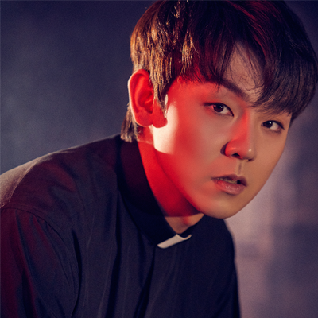
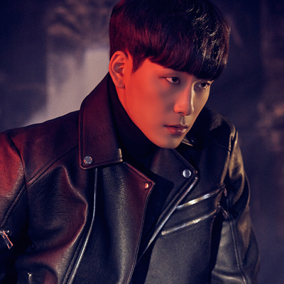
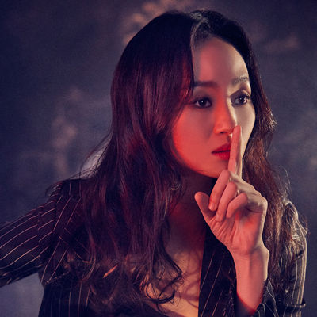
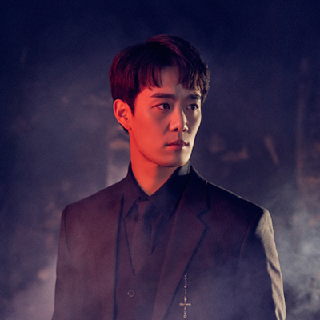

"신의 선택을 받은 자"
캐릭터 목록

마르코
(배우: 기세중)
요한
(배우: 백기범)
서유정
(배우: 이지숙)
바텐더
(배우: 최호승)작품 소개
"신부님, 악마는 실제로 존재하나요?"(공연 中)
신자의 질문에 마르코는 과거로 돌아가 떠올린다. 과거의 마르코에게는 어떤 일이 있었을까?
신자의 질문에 마르코는 과거로 돌아가 떠올린다. 과거의 마르코에게는 어떤 일이 있었을까?
작품에 대한 대략적인 이야기
이 작품은 진정한 오컬트라고 볼 수 있을 것 같아.
난 배우님 때문에 보게 되었지만, 어쩌다 보니 다른 배우님에 치이게 되는 계기가 되었던 작품이기도 해.
극의 첫 시작은 마르코가 신자에게 질문을 받으며 시작해. 그리고는 과거를 회상하는 듯이 극이 시작되지.
마르코는 원래 사제였지만, 과거 구마예식에서 문제를 일으켰다는 이유로 파문 돼. 그리고는 의대생인 요한과 함께 야매(?) 구마예식을 하러 다니지. 그렇게 다니던 중, 마르코는 기이한 기운을 느껴. 평소에 경험하던 악마들과는 다른 느낌.
그렇게 하루하루 보내던 나날 중, 요한의 어머니(무당)가 정신병원에서 하나의 의뢰를 받아. 요한은 어머니를 따라 정신병원으로 가게 되고, 마르코는 그걸 말리려고 했지만, 결국 말리지는 못해.
정신병원에 있던 환자 "서유정"은 이미 악마에게 빙의된 채, 요한을 끌어들이고, 결국 마르코도 정신병원으로 오게 만들어. 그리고는 마르코의 과거를 보여주며, 마르코를 고통으로 끌어들이지.
마르코가 과거에 파문되었던 그 날을 보여주며 말이야.
마르코는 어릴 때부터 성당에서 지냈는데, 그 성당의 신부님이 구마예식을 하면서 죽고, 그 옆에 있던 가브리엘라 수녀 또한 죽어. 수녀의 죽음에는 수녀가 원했다는 정당한 이유가 있었지만, 마르코는 여전히 그녀의 죽음이 자신의 잘못이라고 생각하며, 그날의 기억에서 헤어나오지 못한 채 계속 묶여서 지내고 있었던 거야.
그 기억에 또 다시 잠식되어 가던 찰나, 베드로(=바텐더)가 극적으로 나타나서는 마르코를 구하며, 결국 마르코, 베드로, 요한이 함께 구마를 성공적으로 완료하게 돼. 그 일을 계기로 마르코는 정식 사제가 되고 극은 끝나.
여담으로는 극에서는 "666"이라는 숫자를 중요하게 여기는 듯이 나오는데, 그 숫자가 악마의 숫자라나 뭐라나..
난 배우님 때문에 보게 되었지만, 어쩌다 보니 다른 배우님에 치이게 되는 계기가 되었던 작품이기도 해.
극의 첫 시작은 마르코가 신자에게 질문을 받으며 시작해. 그리고는 과거를 회상하는 듯이 극이 시작되지.
마르코는 원래 사제였지만, 과거 구마예식에서 문제를 일으켰다는 이유로 파문 돼. 그리고는 의대생인 요한과 함께 야매(?) 구마예식을 하러 다니지. 그렇게 다니던 중, 마르코는 기이한 기운을 느껴. 평소에 경험하던 악마들과는 다른 느낌.
그렇게 하루하루 보내던 나날 중, 요한의 어머니(무당)가 정신병원에서 하나의 의뢰를 받아. 요한은 어머니를 따라 정신병원으로 가게 되고, 마르코는 그걸 말리려고 했지만, 결국 말리지는 못해.
정신병원에 있던 환자 "서유정"은 이미 악마에게 빙의된 채, 요한을 끌어들이고, 결국 마르코도 정신병원으로 오게 만들어. 그리고는 마르코의 과거를 보여주며, 마르코를 고통으로 끌어들이지.
마르코가 과거에 파문되었던 그 날을 보여주며 말이야.
마르코는 어릴 때부터 성당에서 지냈는데, 그 성당의 신부님이 구마예식을 하면서 죽고, 그 옆에 있던 가브리엘라 수녀 또한 죽어. 수녀의 죽음에는 수녀가 원했다는 정당한 이유가 있었지만, 마르코는 여전히 그녀의 죽음이 자신의 잘못이라고 생각하며, 그날의 기억에서 헤어나오지 못한 채 계속 묶여서 지내고 있었던 거야.
그 기억에 또 다시 잠식되어 가던 찰나, 베드로(=바텐더)가 극적으로 나타나서는 마르코를 구하며, 결국 마르코, 베드로, 요한이 함께 구마를 성공적으로 완료하게 돼. 그 일을 계기로 마르코는 정식 사제가 되고 극은 끝나.
여담으로는 극에서는 "666"이라는 숫자를 중요하게 여기는 듯이 나오는데, 그 숫자가 악마의 숫자라나 뭐라나..
캐릭터와 배우에 대한 나나링의 사담
캐릭터 자체는 매력적인가.. 글쎄. 잘 모르겠어. 소재 자체는 엄청나게 매력적이라고 생각해.
대학로에서도 '구마'라는 소재를 가진 작품은 찾기 힘들었으니까.
생각보다 캐릭터 하나하나가 촘촘하게 만들어져 있어.
'마르코'는 어린 시절의 기억 속에 사로잡혀 나오지 못하지만, 결국 자신의 의지와 타인의 도움으로 자신을 옭아매고 있던 끈을 끊어내지.
'요한'은 현실에서는 의대생이라는 타이틀을 가지고 있지만, 무당인 엄마의 영향으로, 요한도 귀신을 보며 결국 학업에도 영향을 받게 돼. (극의 마지막에는 아마.. 의사가 결국 됐던 걸로 기억하는데.) 귀신을 본다는 이유로 어릴 적부터 놀림을 받지만, 결국 마지막에는 1인분을 하며 지내게 돼.
'서유정'은 어릴 적, 발레를 하며 다른 캐릭터에 비해 나은 생활을 보냈지만, 아버지의 죽음으로 모든 것이 망가져 결국 정신병원에 입원, 악마에게 빙의되며 결국 구마를 당하게 돼. 하지만, 그녀가 구마 되던 그 순간, 그녀의 모습은 그 어디에서도 볼 수 없는 평온한 모습이야.
'바텐더'는 평범한 바의 바텐더처럼 밝은 모습의 캐릭터야. 이 극에서 볼 수 있는 유일한.. 밝은 캐릭터라고 생각해. 마지막 부분에서 마르코의 끈을 끊게 도와주는 인물이기도 하고.
'서유정'과 '바텐더'역의 배우들은 1인 2역을 소화하게 돼. 작품 설명에 나온 '서유정'과 '바텐더', 그리고 '악마'. 난 이 극을 보면서 '서유정'역의 배우들을 꽤 많이 좋아했어. 정말.. 멋있다고 느꼈거든. 내가 왜 그렇게 느꼈는지는, 영상을 보면 알 수 있을지도?
극을 보다 보면 가끔 이해가 안 될 때도 있어. 하지만, 그 부분에 대해 한번 쯤 복기하며 생각해보는 극도 나름의 즐거움이 있다고 생각해.
생각보다 캐릭터 하나하나가 촘촘하게 만들어져 있어.
'마르코'는 어린 시절의 기억 속에 사로잡혀 나오지 못하지만, 결국 자신의 의지와 타인의 도움으로 자신을 옭아매고 있던 끈을 끊어내지.
'요한'은 현실에서는 의대생이라는 타이틀을 가지고 있지만, 무당인 엄마의 영향으로, 요한도 귀신을 보며 결국 학업에도 영향을 받게 돼. (극의 마지막에는 아마.. 의사가 결국 됐던 걸로 기억하는데.) 귀신을 본다는 이유로 어릴 적부터 놀림을 받지만, 결국 마지막에는 1인분을 하며 지내게 돼.
'서유정'은 어릴 적, 발레를 하며 다른 캐릭터에 비해 나은 생활을 보냈지만, 아버지의 죽음으로 모든 것이 망가져 결국 정신병원에 입원, 악마에게 빙의되며 결국 구마를 당하게 돼. 하지만, 그녀가 구마 되던 그 순간, 그녀의 모습은 그 어디에서도 볼 수 없는 평온한 모습이야.
'바텐더'는 평범한 바의 바텐더처럼 밝은 모습의 캐릭터야. 이 극에서 볼 수 있는 유일한.. 밝은 캐릭터라고 생각해. 마지막 부분에서 마르코의 끈을 끊게 도와주는 인물이기도 하고.
'서유정'과 '바텐더'역의 배우들은 1인 2역을 소화하게 돼. 작품 설명에 나온 '서유정'과 '바텐더', 그리고 '악마'. 난 이 극을 보면서 '서유정'역의 배우들을 꽤 많이 좋아했어. 정말.. 멋있다고 느꼈거든. 내가 왜 그렇게 느꼈는지는, 영상을 보면 알 수 있을지도?
극을 보다 보면 가끔 이해가 안 될 때도 있어. 하지만, 그 부분에 대해 한번 쯤 복기하며 생각해보는 극도 나름의 즐거움이 있다고 생각해.